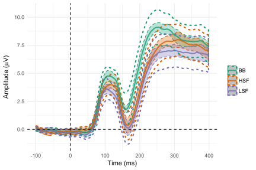
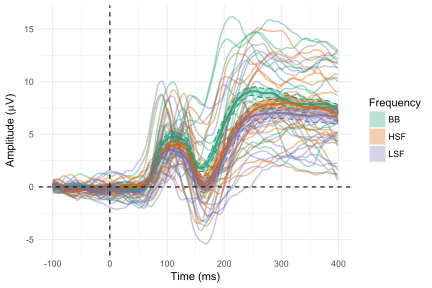
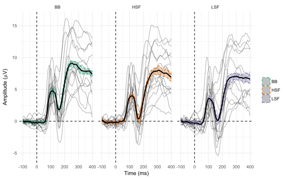
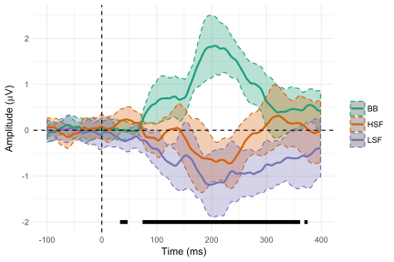
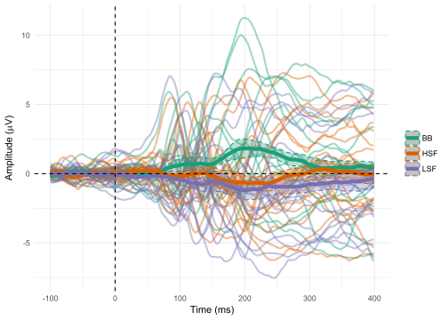
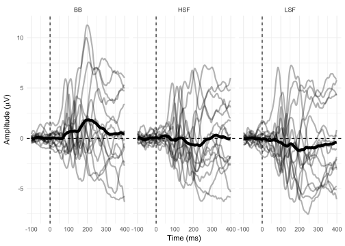

In an earlier post I took a look at visualizing ERPs from two conditions at a single electrode. This time I’m going to look at three conditions. As in the previous post, I’ll assume a basic familiarity with ERPs.
First I’ll load in the full dataset, which contains ERPs for all conditions for all subjects, and whip it into shape.
library(ggplot2)
library(tidyverse)
library(afex)
library(Rmisc)
library(magrittr)
levCatGAall <- read_csv(
"https://raw.githubusercontent.com/craddm/ExploringERPs/master/levCatGAall.csv",
col_names = c("Object.BB","Object.HSF","Object.LSF","Non-Object.LSF","Non-Object.HSF","Non-Object.BB","Time","Subject")
)
levCatGAall <- levCatGAall[c(1,2,3,6,5,4,7,8)]
levCatGAall <- levCatGAall %>%
filter(Time >= -100 & Time <= 400) %>%
gather(condition,amplitude,-Subject,-Time) %>%
separate(condition,c("Object","Frequency"),sep= "[.]",extra="merge")The Plots
Let’s start off with a simple ERP plot with both within- and between-subject 95% confidence intervals (see previous post). Although the dataset is for a 2 x 3 design (Object X Spatial Frequency - for further details, check our article Early and late effects of objecthood and spatial frequency on event-related potentials and gamma band activity) - I’ll be focussing entirely on the Spatial Frequency factor here. Frequency has three levels: high (HSF), broadband (BB), and low (LSF).
# basic plot setup
ERP.plot <- ggplot(levCatGAall,aes(Time, amplitude))+
scale_color_brewer(palette = "Dark2") +
scale_fill_brewer(palette = "Dark2") +
theme_minimal()
## Calculate running within-subject CIs
runningCIs <- levCatGAall %>%
group_by(Frequency, Time, Subject) %>%
dplyr::summarise(amplitude = mean(amplitude)) %>%
split(.$Time) %>%
map(~summarySEwithin(data = .,
measurevar = "amplitude",
withinvars = c("Frequency"),
idvar = "Subject"))
WSCI <- map_df(runningCIs,magrittr::extract) %>%
mutate(
Time = rep(unique(levCatGAall$Time),each =3) #Note, you'll have to change 3 to match the number of conditions
)
ERP.plot+
geom_ribbon(data = WSCI,
aes(ymin = amplitude-ci,
ymax = amplitude+ci,
fill = Frequency,
colour = Frequency),
linetype="dashed",
alpha = 0.3) +
guides(fill = "none")+
stat_summary(fun.data = mean_cl_normal,
geom = "ribbon",
size = 1,
aes(colour = Frequency),
linetype = "dotted",
fill = NA,
alpha = 0.8)+
stat_summary(fun.y = mean,
geom = "line",
size = 1,
aes(colour = Frequency),
alpha = 0.8)+
labs(x = "Time (ms)",
y = expression(paste("Amplitude (",mu,"V)")),
colour = "")+
geom_vline(xintercept = 0,linetype = "dashed" )+
geom_hline(yintercept = 0,linetype = "dashed")
Looks like there are consistently higher amplitudes for the BB images from the P1 onwards until after the P2. The within-subject CIs definitely help here - between-subject CIs would have a lot of overlap, as you can probably see. Having both types of CIs on this plot is making it a little messy - I wouldn’t normally do this. We’ll plow on adding individual subject data.
ERP.plot +
stat_summary(fun.y = mean,geom = "line",alpha = 0.4,aes(group =interaction(Subject,Frequency),colour = Frequency),size = 0.7) +
guides(alpha= "none") +
geom_ribbon(data = WSCI,
aes(ymin = amplitude-ci,
ymax = amplitude+ci,
fill = Frequency,
colour = Frequency),
linetype="dashed",
alpha = 0.3) +
stat_summary(fun.y = mean,geom = "line",size = 1,aes(colour = Frequency),alpha = 0.8) +
labs(x = "Time (ms)",y = expression(paste("Amplitude (",mu,"V)")),colour = "") +
guides(colour= "none") +
geom_vline(xintercept = 0,linetype = "dashed") +
geom_hline(yintercept = 0,linetype = "dashed")
Now it’s becoming a real mess, which can can only get worse when you add more conditions. Let’s split the conditions up.
ERP.plot+
facet_wrap(~Frequency)+
stat_summary(fun.y = mean,geom = "line",aes(group = Subject),alpha = 0.3)+
geom_ribbon(data = WSCI,
aes(ymin = amplitude-ci,
ymax = amplitude+ci,
fill = Frequency,
colour = Frequency),
linetype="dashed",
alpha = 0.3) +
guides(fill= "none")+
stat_summary(fun.y = mean,geom = "line",size = 1)+
labs(x = "Time (ms)",y = expression(paste("Amplitude (",mu,"V)")),colour = "")+
geom_vline(xintercept = 0,linetype = "dashed" )+
geom_hline(yintercept = 0,linetype = "dashed")
Now we have three subplots, each informative about a particular condition. The mental gymnastics to work out where the differences are are becoming harder, and I find myself relying on the condition means. Couple of points of note - you have a couple of people who look a bit odd in the 160-200 ms time window - where most people are showing negative-going deflections, they aren’t. After 200 ms or so, the data in general seems much more variable. I can tell that from the confidence intervals anyway, and it doesn’t seem to differ much across conditions.
Since there’s no way to tell which line belongs to which participant, it’s impossible to know if it’s the same participants showing the same patterns across conditions (although I’d say it’s very likely in the early parts of the ERP at least). As usual, what I’m really interested in here are the within-subject differences across conditions.
Difference waves
In the two condition post, life was simple. Two conditions only need a single difference wave. But as the number of conditions increases, the number of pairwise differences increases. For three conditions, you’d need three difference waves (here: BB-HSF, BB-LSF, HSF-LSF). For four conditions, you’d need six difference waves. But of course, you’d start off with an F-test to test whether any of the means differ from each other, and, if they do, we’d then run post-hoc t-tests to check which pairs of means differ. A simple starting point is thus the difference between each condition mean and the grand mean, the mean across all conditions.
As described in a previous post on running t-tests, we can also add the results of a running ANOVA to our plot. We’ll use afex to run each ANOVA and purrr to run them across each timepoint and collect the results. We’ll stick with uncorrected p values for now, but of course they can be corrected as required. Note that you have to be careful to make sure that you choose the p-values from the right term in the ANOVA. With a one-way ANOVA this is not so tough, but here I’m actually running a 2 by 3 ANOVA, so there are actually three terms (Object, Frequency, and Object by Frequency). For the purposes of this post I’m focussing solely on Frequency. I’ve also included 95% within-subject confidence intervals.
# Run the ANOVA on each timepoint
Ftests <- levCatGAall %>%
split(.$Time) %>%
map(~ aov_ez("Subject","amplitude",.,within = c("Object","Frequency")))
#Extract the p-values and correct them as desired.
levCatGAall$pval <- p.adjust(map_dbl(Ftests,c(1,6,2)),"none")
levCatGAall$crit <- 0+(levCatGAall$pval <= .05)
levCatGAall$crit[levCatGAall$crit == 0] <- NA
#calculate the grand average ERP across all subjects and conditions
levCatGAall$GAdiff <- levCatGAall$amplitude-(ave(levCatGAall$amplitude,levCatGAall$Time))
#re-doing the CIs. Note it's not necessary to recalculate them, as they're the same - this is just an easy way for me to get them in the right format. It's not very efficient so feel free to improve it ;)
runningCIs <- levCatGAall %>%
group_by(Frequency,Time,Subject)%>%
dplyr::summarise(amplitude = mean(GAdiff))%>%
split(.$Time) %>%
map(~summarySEwithin(data = .,
measurevar = "amplitude",
withinvars = c("Frequency"),
idvar = "Subject"))
WSCI <- map_df(runningCIs,magrittr::extract) %>%
mutate(
Time = rep(unique(levCatGAall$Time),each =3) #Note, you'll have to change 3 to match the number of conditions
)
#Reinitialize the plot to add the new variables added to levCatGAall
ERPdiff.plot <- ggplot(levCatGAall,aes(Time,amplitude))+
scale_color_brewer(palette = "Dark2")+
scale_fill_brewer(palette = "Dark2")+
theme_minimal()
ERPdiff.plot+
guides(fill = "none")+
labs(x = "Time (ms)",
y = expression(paste("Amplitude (",mu,"V)")),
colour = "")+
geom_ribbon(data = WSCI,
aes(ymin = amplitude-ci,
ymax = amplitude+ci,
fill = Frequency,
colour = Frequency),
linetype="dashed",
alpha = 0.3) +
stat_summary(fun.y = mean,
geom = "line",
size = 1,
aes(y = GAdiff,
colour = Frequency)
)+
geom_line(aes(x = Time,
y = crit-3),
na.rm = TRUE,
size = 2)+
geom_vline(xintercept = 0,linetype = "dashed" )+
geom_hline(yintercept = 0,linetype = "dashed")
This shows that there is a significant effect of frequency around 40 ms, from around 80 to 360 ms, and from around 370 - 375 ms. Of course, we can’t tell from an F-test alone which means are significantly different from each other at any given time point. But it’s pretty clear that BB images elicit more positive ERPs than HSF and LSF images from around 80 - 300 ms. The CIs also help here - by around 300ms the HSF and BB image ERPs are converging, but LSF is staying more negative. Really we need to do post-hoc tests - I’ll try that out in a follow-up post.
In theory, we could also add lines for each person’s difference from the grand mean…
ERPdiff.plot+
guides(fill = "none")+
labs(x = "Time (ms)", y = expression(paste("Amplitude (",mu,"V)")),colour = "")+
stat_summary(fun.y = mean,geom = "line",size = 1,aes(y = GAdiff,group = interaction(Subject,Frequency),colour = Frequency),alpha = 0.4)+
geom_ribbon(data = WSCI,
aes(ymin = amplitude-ci,
ymax = amplitude+ci,
fill = Frequency,
colour = Frequency),
linetype="dashed",
alpha = 0.3)+
stat_summary(fun.y = mean,geom = "line",size = 2,aes(y = GAdiff,colour = Frequency))+
geom_vline(xintercept = 0,linetype = "dashed" )+
geom_hline(yintercept = 0,linetype = "dashed")
…but if you can make sense of that, you have better eyesight than I have. Splitting them up by condition helps, but still leaves you with having to perform mental gymnastics to compare across conditions. But coupled with one of the first difference plot, that in itself might not be a huge issue.
ERPdiff.plot+
guides(fill = "none")+
labs(x = "Time (ms)", y = expression(paste("Amplitude (",mu,"V)")),colour = "")+
stat_summary(fun.y = mean,geom = "line",size = 1,aes(y = GAdiff,group = Subject),alpha = 0.3)+
stat_summary(fun.y = mean,geom = "line",size = 2,aes(y = GAdiff))+
geom_vline(xintercept = 0,linetype = "dashed" )+
geom_hline(yintercept = 0,linetype = "dashed")+
facet_wrap(~Frequency)
So at a first pass, subtracting the grand average ERP from the condition ERPs seems like a plausible way to show overall differences across three conditions. I’ll post soon on doing pairwise comparisons between those three conditions.